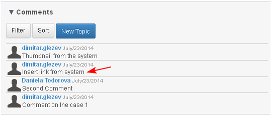

The comment could have only one level of replies. There is no reply to a reply.
- The user selects the comment which he/she wants to reply on.

- The comment opens and under it an active field for entering reply is visualized (1).
- The user has the option to expand the field for entering a reply (2).
- If the field is expanded a free text editor filed opens with the same built in functions for insert links as for the action "Create new topic".
- The user enters a reply in the field (3) and clicks the "Enter" key from the PC keyboard.

- The reply on the comment is saved (1). Actions "edit and "delete" appear for the reply (2). The user is able to enter another reply (3).

- The user is able to review the replies of each comment and enter new replies on a selected comment in the "Comments" dashlet (1-2).

- If the user replies to a comment with status "Suspended", then the comment status automatically changes to "In Progress".